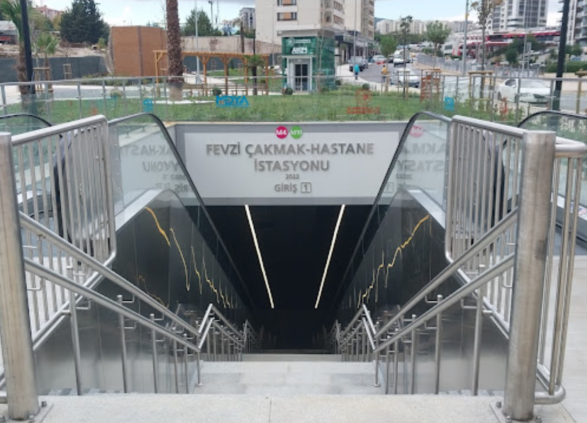

Sabiha Gökçen Metro İstasyonu

Adres:
Sanayi, 34906 Pendik/İstanbul
Kurtköy Metro İstasyonu
Adres:
Kurtköy, 34912 Pendik/İstanbul
Yayalar Metro İstasyonu
Adres:
Yayalar, Ankara Cd. No:183, 34909 Pendik/İstanbul
Fevzi Çakmak Metro İstasyonu
Adres:
Fevzi Çakmak, 34899 Pendik/İstanbul
Tavşantepe Metro İstasyonu
Adres:
Doğu, 34890 Pendik/İstanbul